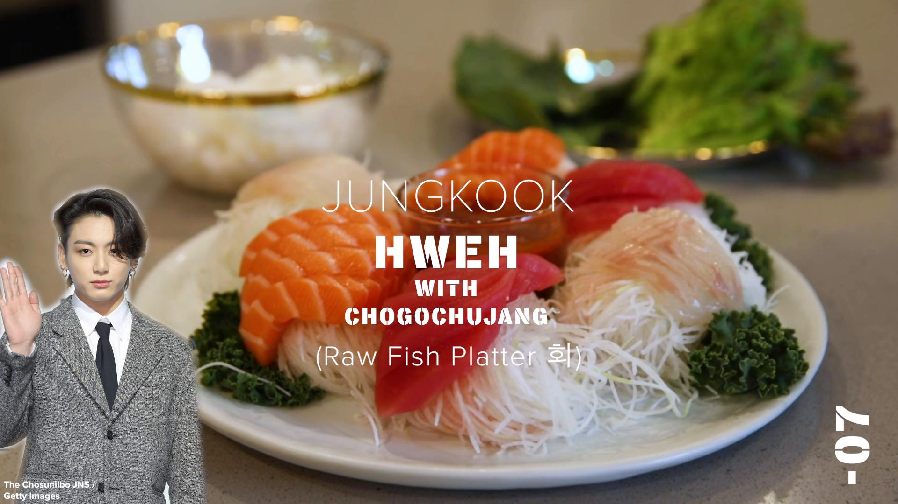

Jeon Jungkook: Hweh (Sashimi) With Korean Chogochujang Dipping Sauce
Can’t get enough of BTS? Try one of Jungkook’s favorite foods: hweh, or Korean-style sashimi served with sweet and spicy chogochujang. Try it wrapped in red leaf lettuce or perilla leaves!
Ingredients
Chogochujang
- ¼ cup gochujang(55 g), Korean red chile paste
- 2 tablespoons water
- 2 tablespoons rice vinegar
- 2 tablespoons sugar
- 1 teaspoon garlic, minced
- 1 teaspoon sesame seeds, toasted
Sashimi
- ¼ lb sashimi grade salmon(115 g)
- ¼ lb sashimi-grade tuna(115 g)
- ¼ lb sashimi-grade halibut(115 g)
Toppings
- perilla leaf
- red leaf lettuce
- white rice, steamed
Preparation
- Make the chogochujang. In a medium bowl, stir together the gochujang, water, rice vinegar, granulated sugar, minced garlic, and toasted sesame seeds.
- Prepare the sashimi: If the sashimi-grade salmon, tuna, and halibut is not pre-cut, cut into thin slices against the grain.
- Arrange the fish on a plate. Serve with perilla leaves and red leaf lettuce for wrapping, rice, and the chogochujang for dipping.